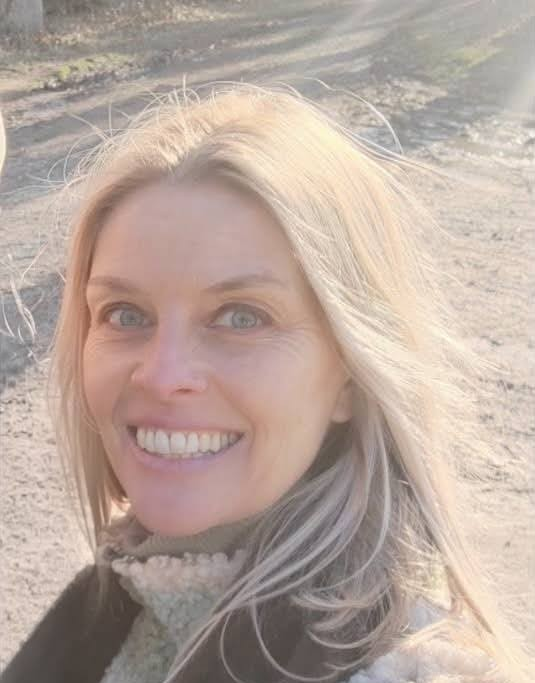
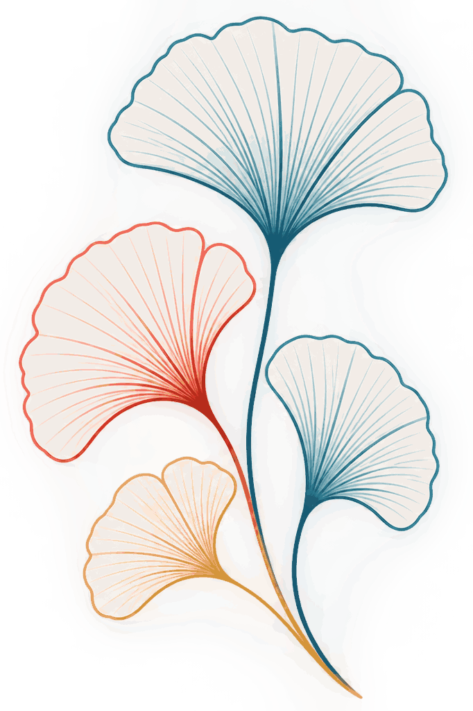
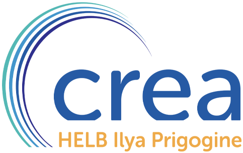
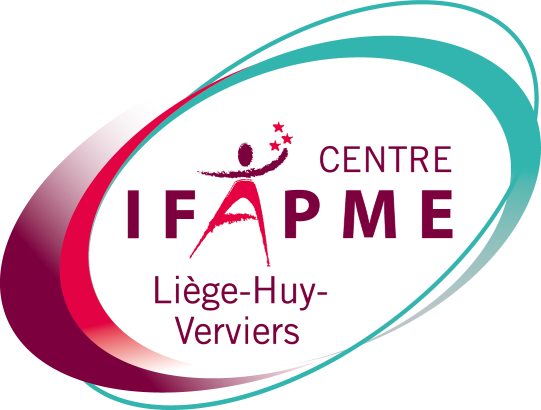
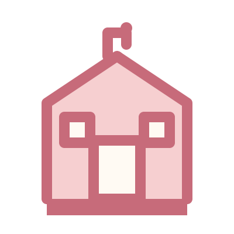
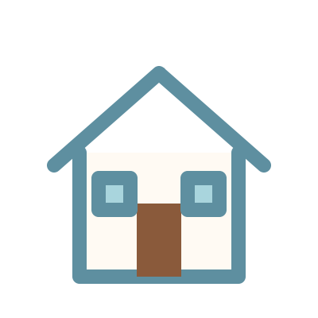
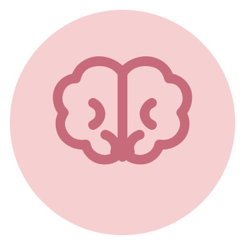
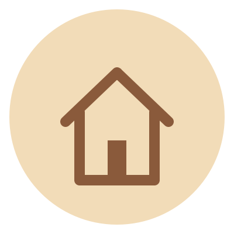
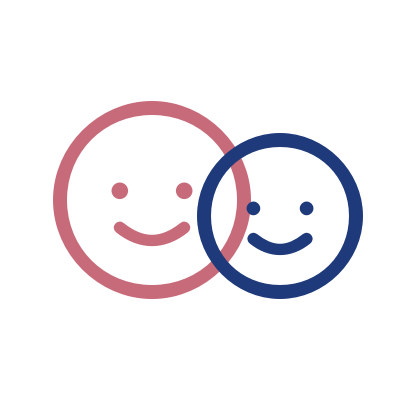

Diplôme
Ergothérapeute diplômée – HEPHO Tournai, promotion 2003.
Accompagnement des enfants et adolescents à Ath, Lessines et La Louvière.
« Développer l'autonomie et révéler les forces de chaque enfant. »


Ergothérapeute diplômée – HEPHO Tournai, promotion 2003.
Une pratique aujourd'hui spécialisée en pédiatrie, fondée sur une approche globale et individualisée : les capacités de l'enfant, ses occupations et son environnement.


J'accompagne les enfants et adolescents qui rencontrent des difficultés dans leurs apprentissages, leur autonomie ou leurs activités du quotidien. L'ergothérapie s'appuie sur les capacités et les forces de l'enfant pour identifier ce qui limite sa participation, puis propose des stratégies concrètes et personnalisées. Elle se construit avec l'enfant et sa famille, en collaboration avec l'école et les autres professionnels.

Permettre à l'enfant de participer aux apprentissages avec davantage d'autonomie et de confiance.

Favoriser son indépendance, sa participation et son bien-être au quotidien.


« Chaque enfant est unique : l'objectif n'est pas de faire à sa place, mais de lui donner les moyens de faire par lui-même. »

Enfants et adolescents
Français
Séances individuelles
50 € la séance
Jenny accepte de nouveaux patients.
Je reçois au Centre L'Odyssée à La Louvière le mardi et à Ath le mercredi après-midi, ainsi qu'au Centre Thérapeutique Lessines à Lessines le vendredi. Pour prendre rendez-vous dans chaque cabinet, appelez-moi au 0499 / 870 829 ou écrivez à vinckierjenny@gmail.com.